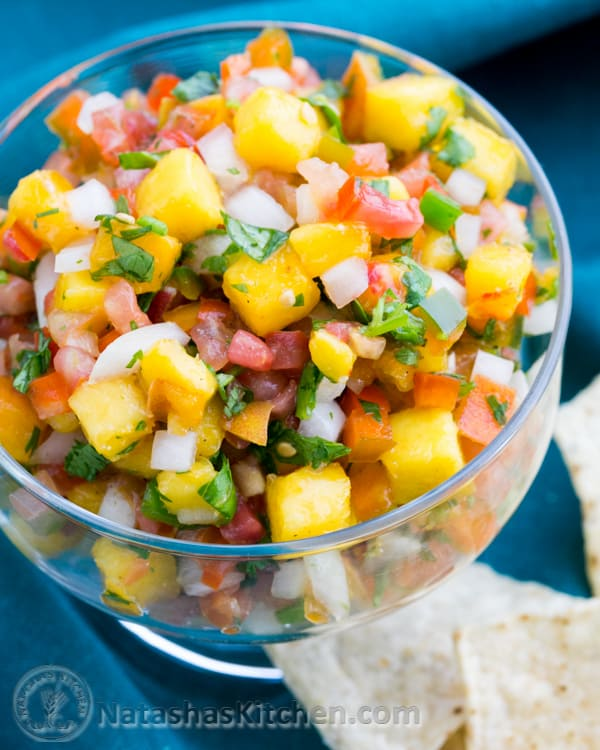

Easy peach salsa

Description
This cooked peach salsa makes a great dip for tortilla chips or a topping for your favorite grilled meat.
Ingredients
- 1 tablespoon olive oil
- 1 small onion, diced
- 12 grape tomatoes, diced
- 2 cloves garlic, minced
- 2 large peaches, diced
- 3 teaspoons honey
- 1 tablespoon lemon juice
Steps
- Heat oil in a pan over medium heat; add onion and cook until soft, 1 to 3 minutes. Add tomatoes and garlic; cook over medium-low heat about 5 minutes. Add peaches, honey, and lemon juice; cook until combined, 2 to 3 minutes more.
return home